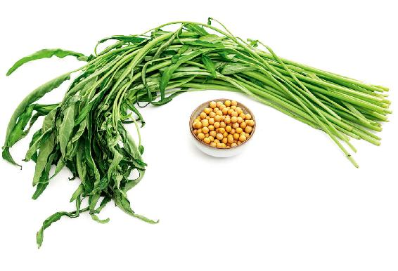
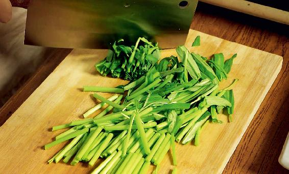
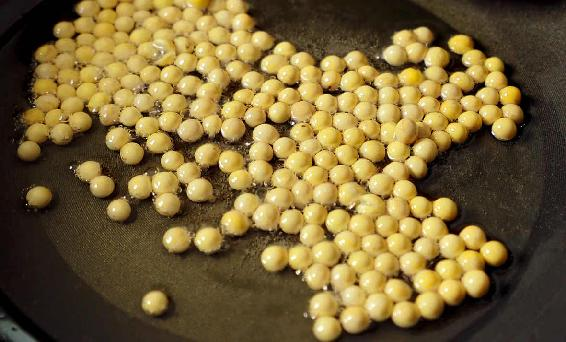
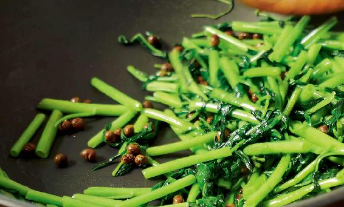
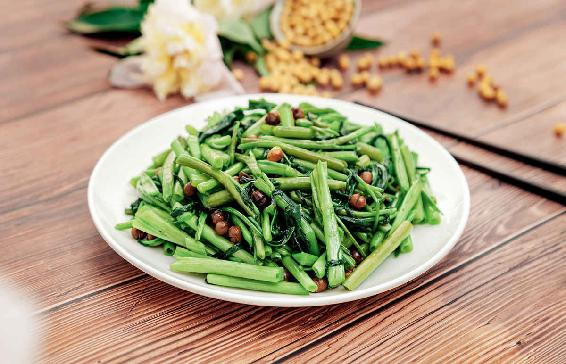

前文中我简单介绍了空心菜在出伏送暑汤里的排毒祛湿功能，具体来讲，空心菜能排什么毒呢？
以前，民间如果有人不小心吃了有毒的蘑菇或是有毒的草，有一种方法就是把生的空心菜捣烂，然后挤出一大碗汁给中毒的人喝下去，毒就能解了。
现在我们经常吃一点空心菜，也是可以帮助解食物之毒的。
人体内的毒是什么毒呢？就是血毒。
经过一个夏天，我们身体内的血毒其实蓄积了很多。比如，有些人皮肤上容易长痘、长疮，这就是血毒瘀积的表现，不注意调理的话，有可能一直持续到秋分。
如果您想要防止皮肤出现问题的话，现在不妨就多吃一点空心菜来清血毒。
空心菜对于缓解婴儿的湿疹是很有帮助的。
夏天如果您给婴儿洗澡的话，不妨用新鲜的空心菜煮的水。注意，给孩子洗，一定要用有机种植的空心菜，经过农药污染的空心菜是不可以用的。
当然，孩子皮肤如果有溃破的地方，不要洗，以避免感染。
空心菜除了解毒的功效外，更重要的就是排水湿的功效。
特别是小便不畅通的人，吃了空心菜就会感觉到小便很畅通。老年女性和有前列腺问题的男性朋友，我建议您平时可以多吃一点空心菜。
空心菜的老秆和嫩的茎叶烹调的时间是不一样的。
茎叶嫩的部分，熟的时间非常短，而秆熟的时间长，如果一起做的话，不是秆没熟，就是叶子煮过了。因此，我们在烹调空心菜的时候，要把茎和叶子分开来做。
把叶子连同特别细嫩的茎掐下来，单独用来做汤或者菜，剩下的老秆、粗壮的部分的茎，可以用来做空心菜老秆炒黄豆。
空心菜老秆炒黄豆

原料：空心菜、黄豆。

做法：
1.把空心菜粗的老秆（一定要比黄豆的直径大），切成大概2厘米长。

2.取干的黄豆，下油锅用小火慢慢地炸酥，炸好后，捞起来把油沥掉。

3.锅里留一点油备用，然后把空心菜的老秆和黄豆放入锅里，一起翻炒。炒着炒着黄豆就会一粒一粒地都钻到空心菜的老秆里面去了。最后再放一点点盐，翻炒两下就可以起锅了。
允斌叮嘱：
1.这道菜所用的黄豆应该是土黄豆。因为现在的圆黄豆比较大，如果空心菜的老秆比较细的话，它就没办法钻进去。不过，即使秆里面没有黄豆，分开来吃，功效依然是一样的。
2.黄豆要炸酥，炸到黄豆的皮有一点发皱了才可以。

这道菜吃起来是很香的。因为空心菜的老秆和黄豆的口味正好是互补的，老秆是脆的，而黄豆是酥香的，这样的口感吃起来很特别。
空心菜有一种清香味，黄豆有一种浓香味，两个在一起味道很好，小孩子也会很喜欢吃，因为吃起来很有新鲜感。
当然，最重要的是它们搭配在一起的功效。空心菜是祛湿的，而黄豆是补气的，在这个时节，我反复强调的就是我们既要补又要祛湿，因此，我们吃的菜都是按有补有泻来搭配的。
空心菜和黄豆在一起，黄豆可以增强身体排出水湿的动力，空心菜就可以顺势把水湿排出去。有补有泻是饮食保健的一个原则，不能偏向一个极端，而要取中庸之道。